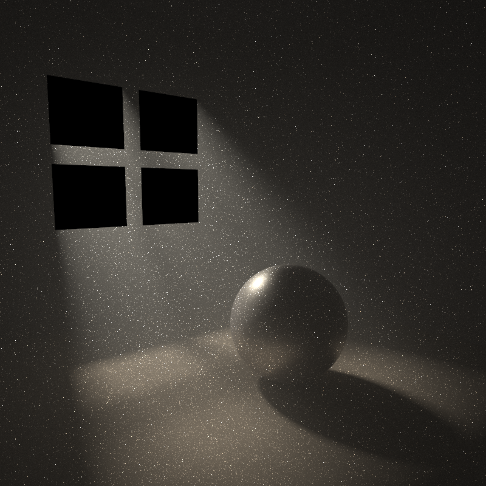
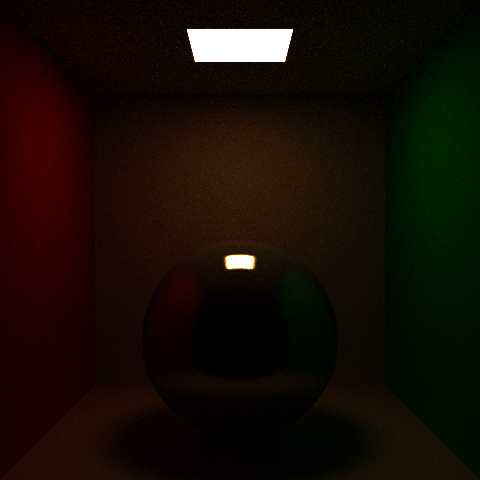
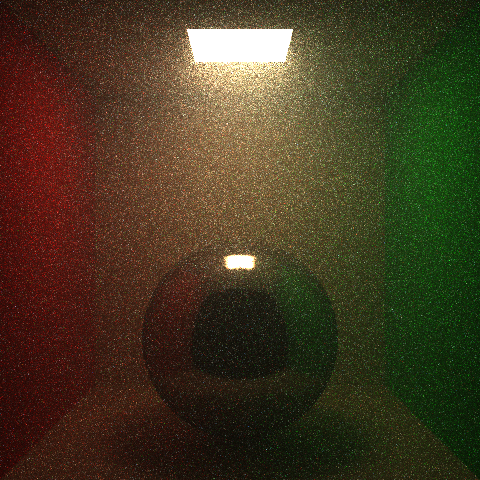
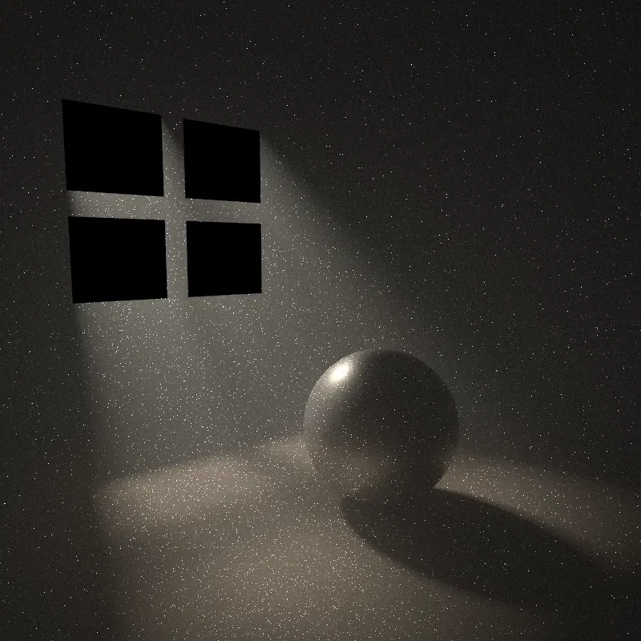

Volumetric Path Tracing
A physically based renderer I wrote over a quarter, extended to support participating media: fog, haze, and the light shafts they produce.

The base renderer
The volumetric work sits on top of a path tracer built from scratch: a BVH for acceleration, an iterative integrator in pathTrace(), next event estimation and multiple importance sampling for surface direct lighting in shadeMIS() using the power heuristic, Russian roulette termination, cosine and BRDF importance sampling, and Phong and GGX microfacet BRDFs through evalBRDF().
Media are handled at each bounce rather than in a separate integrator. The absorption-only path is kept as a fallback when sigma_s = 0, so every scene written for the surface-only renderer still produces identical output.
Implementation
- A
Mediumstruct holds absorption sigma_a, scattering sigma_s, and the Henyey-Greenstein asymmetry parameter g, with derived sigma_t = sigma_a + sigma_s and albedo = sigma_s / sigma_t. One homogeneous medium covers the whole scene. - A
transmittance(d, sc)helper returnsglm::exp(-sigma_t * d)componentwise, so coloured fog works. Throughput picks it up on each segment between hits, and NEE and BRDF samples get the same attenuation along their light-direction segments. - Each bounce samples a free flight distance t = -log(1-xi) / sigma_t_s before the surface intersection is used, where sigma_t_s is the mean of the rgb sigma_t channels. If t is less than the hit distance, the next vertex is a scattering event in the medium instead of the surface hit.
- Sampling distances with a scalar sigma_t_s but attenuating with the rgb sigma_t means the weight at a scatter vertex is (sigma_s / sigma_t_s) * exp((sigma_t_s - sigma_t) * t). When the ray reaches a surface without scattering the weight is exp((sigma_t_s - sigma_t) * t). Both are exact, the estimator stays unbiased for coloured media.
hgPhase(cosTheta, g)andsampleHG()give closed-form evaluation and inverse CDF sampling on cosTheta, with an isotropic special case near g = 0. The HG value doubles as the solid angle pdf since the sampling is exact, which is what makes it usable in MIS.shadeMISVolume()mirrors the surface direct lighting estimator with the same multi-sample power heuristic, except the phase function replaces the BRDF and there is no surface cosine. NEE shadow rays pick up transmittance over their length. The phase-side contribution simplifies to w * Li * transmittance since p_HG / pdf = 1.- After the direct estimator the path continues along a direction sampled from HG. The pdf cancels exactly against the phase function, so the throughput carries only the scatter vertex weight from item 4.
Absorption
The three renders below are the same cornell box with identical path tracer settings, varying only the medium parameters. Absorption only: sigma_s = 0, no scattering events, no phase function. With no scattering there is no missing in-scattering term to compensate for, so the renderer is physically correct at this stage.



The warm colour cast is the expected behaviour. Blue is absorbed most and red least, so what reaches the camera is biased toward warm wavelengths. Depth-dependent attenuation is visible too: the back wall and the sphere are noticeably dimmer than surfaces close to the camera, and the soft floor shadow under the sphere takes on a warm tint because that bounce light travels farther through the medium before reaching the camera.
In-scattering
Same box, now with sigma_a = 0.05 and sigma_s = (0.30, 0.40, 0.50). The glow extending below the light is light scattered toward the camera in mid air, which the absorption-only renders cannot produce.


The glow under the light is brighter and more directional in the forward scattering case, because forward scattering keeps redirected light moving roughly along its original direction, down and toward the camera.
The hero scene
A dark room with a four-pane window in one wall and a small, very bright quad light far outside it, about 25 units away with intensity in the thousands.
The distance matters: shaft definition comes from the angular size of the source, and a large close light gives every shadow edge a huge penumbra and the beam turns to mush. Small and far away, with intensity scaled up by distance squared to compensate, keeps the mullion shadows crisp inside the beam.
The medium is sigma_a = 0.02, sigma_s = 0.075, g = 0.45, picked so the mean free path is on the order of the room size and the beam stays visible from a side-on camera (high g values dim the beam at large scatter angles). A GGX sphere sits in the beam landing zone.
Geometry is emitted by a small python script taking room, window, light and camera parameters, mostly so that iterating on the composition meant editing three numbers instead of rederiving vertex coordinates by hand.
The long streak behind the sphere is its shadow through the fog, which I think is the best volumetric detail in the image: the fog behind the sphere receives no direct light so there is no in-scattering there, and the darkness is visible in mid air.
Noise
Volumetric scenes with small bright lights are firefly territory. Rare paths scatter in the fog and then connect to the light with a tiny pdf, dumping a lot of energy into one sample. These outliers converge much more slowly than ordinary variance: going from 1024spp to 4096spp visibly reduced the speckle but did not eliminate it.

The remaining speckle could be removed with per-sample radiance clamping, which is standard practice in production renderers, but it introduces bias and I preferred keeping the estimator unbiased and letting the grain read as film grain.
Limitations
Media are homogeneous and global. Heterogeneous media via delta tracking with a constant majorant, plus ratio tracking for unbiased transmittance on shadow rays (Novák et al. 2014), was scoped as a stretch goal conditional on the homogeneous path landing early. It did not, and the time went into MIS correctness and the hero scene instead. Variance gets ugly fast in heterogeneous media, and I'd rather ship a working homogeneous renderer than a half-debugged heterogeneous one.
Source available on request.